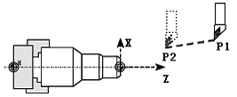
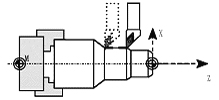
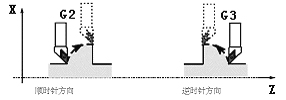
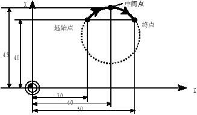
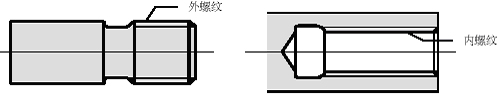
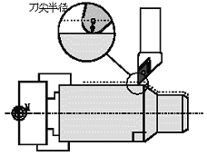

| G代码解释 |
| G00 快速线性移动 |
1. 功能
轴快速移动G0用于快速定位刀具，没有对工件进行加工。可以在几个轴上同时执行快速移动，由此产生一线性轨迹。
机床数据中规定每个坐标轴快速移动速度的最大值，一个坐标轴运行时就以此速度快速移动。如果快速移动同时在两个轴上执行，则移动速度为两个轴可能的最大速度。
用G0快速移动时在地址F下设置的进给率无效。

G0一直有效，直到被G功能组中其它的指令(G1,G2,G3,…) 取代为止。
2. 编程举例
N10 G0 X100 Z65 ；直角坐标系。
…
N50 G0 RP=16.78 AP=45 ；极坐标系。
3.说明
G功能组中还有其它的G指令用于定位功能。在用G60准确定位时，可以在窗口下选择不同的精度。另外，用于准确定位还有一个单程序段方式有效的指令：G9。
在进行准确定位时请注意对几种方式的选择。
G01 带进给率的线性插补
| G01 带进给率的线性插补 |
|---|
1. 功能
刀具以直线从起始点移动到目标位置，按地址F下设置的进给速度运行。所有的坐标轴可以同时运行。
G1一直有效，直到被G功能组中其它的指令(G0,G2,G3,…) 取代为止。

2. 编程举例
N05 G0 G90 X40 Z200 S500 M3 ；刀具快速移动到P1,3个轴方向同时移动，主轴转速=
500转/分, 顺时针旋转。
N10 G1 Z-12 F100 ；进刀到Z-12,进给率100毫米/分。
N15 X20 Z105 ；刀具以直线运行到P2。
N20 Z80 ；快速移动空运行。
N25 G0 Z100 ；快速移动空运行。
N30 M2 ；程序结束。
| G02/G03 圆弧插补 |
1. 功能
刀具以圆弧轨迹从起始点移动到终点，方向由G指令确定:
G2 顺时针方向
G3 逆时针方向

G2和G3一直有效，直到被G功能组中其它的指令(G0,G1,…)取代为止。
说明： 其它的圆弧编程方法有：
CT �C圆弧用切线连接
CIP �C通过中间点的圆弧
2. 编程
G2/G3 X… Z… I… J… ；圆心和终点
G2/G3 CR=… X… Z… ；半径和终点
G2/G3 AR=… I… J… ；张角和圆心
G2/G3 AR=… X… J… ；张角和终点
G2/G3 AP=… RP=… ；极坐标和极点圆弧
说明: 其它的圆弧编程方法有：
CT �C圆弧用切线连接
CIT �C通过中间点的圆弧
3. 编程举例
圆心坐标和终点坐标举例：
N5 G90 Z30 X40 ；用于N10的圆弧起始点
N10 G2 Z50 X40 K10 I-7 ；终点和圆心
终点和半径尺寸举例：
N5 G90 Z30 X40 ；用于N10的圆弧起始点
N10 G2 Z50 X40 CR=12.207 ；终点和半径
说明：CR数值前带负号“-” 表明所选插补圆弧段大于半圆。
终点和张角尺寸举例：
N5 G90 Z30 X40 ；用于N10的圆弧起始点
N10 G2 Z50 X40 AR=105 ；终点和张角
圆心和张角尺寸举例：
N5 G90 Z30 X40 ；用于N10的圆弧起始点
N10 G2 K10 I-7 AR=105 ；圆心和张角
| G05 通过中间点进行圆弧插补 |
1. 功能
刀如果不知道圆弧的圆心、半径或张角，但已知圆弧轮廓上三个点的坐标，则可以使用G5功能。通过起始点和终点之间的中间点位置确定圆弧的方向。
G5一直有效，直到被G功能组中其它的指令(G0,G1,G2,…)取代为止。
说明：可设定的坐标G90或G91指令对终点和中间点有效。

G33 恒螺距螺纹切削
| G33 恒螺距螺纹切削 |
|---|
1. 功能
用G33功能可以加工下述各种类型的恒螺距螺纹:
前提条件：主轴上有角度位移测量系统（内置编码器）。
G33一直有效，直到被G功能组中其它的指令(G0,G1,G2,G3,…)取代为止。

2. 右旋螺纹或左旋螺纹
右旋和左旋螺纹由主轴旋转方向M3和M4确定。
注释：螺纹长度中要考虑导入空刀量和退出空刀量。
在具有2个坐标轴尺寸的圆锥螺纹加工中，螺距地址I或K下必须设置较大位移（较大螺纹长度）的螺纹尺寸，另一个较小的螺距尺寸不用给出。
3. 起始点偏移SF=
在加工螺纹中切削位置偏移以后以及在加工多头螺纹时均要求起始点偏移一位置。G33螺纹加工中，在地址SF下设置起始点偏移量（绝对位置）。如果没有设置起始点偏移量，则设定数据中的值有效。
注意：设置的SF值也始终登记到设定数据中。
4. 编程举例
圆柱双头螺纹，起始点偏移180度，螺纹长度（包括导入空刀量和退出空刀量）100毫米，螺距4毫米/转。右旋螺纹，圆柱已经预制:
N10 G54 G0 G90 X50 Z0 S500 M3 ；回起始点，主轴正转
N20 G33 Z-100 K4 SF=0 ；螺距：4毫米/转
N30 G0 X54
N40 Z0
N50 X50
N60 G33 Z-100 K4 SF=180 ；第二条螺纹线，180度偏移
N70 G0 X54…
| G75 返回固定点 |
1. 功能
用G75可以返回到机床中某个固定点, 比如换刀点。固定点位置固定地存储在机床数据中，它不会产生偏移。 每个轴的返回速度就是其快速移动速度。
G75需要一独立程序段，并按程序段方式有效。在G75之后的程序段中原先“插补方式” 组中的G指令(G0,G1,G2, …)将再次生效。
2. 编程举例
N10 G75 X0 Z0
注释：程序段中X和Z下设置的数值（这里为0）不识别。
| G74 回参考点 |
1. 功能
用G74指令实现NC程序中回参考点功能, 每个轴的方向和速度存储在机床数据中。
G74需要一独立程序段，并按程序段方式有效。在G74之后的程序段中原先“插补方式” 组中的G指令(G0,G1,G2, …)将再次生效。
2. 编程举例
N10 G74 X0 Z0
注释：程序段中X和Z下设置的数值（这里为0）不识别。
| G9/G60/G64 准确定位/连续路径加工 |
1. 功能
针对程序段转换时不同的性能要求，802S/c提供一组G功能用于进行最佳匹配的选择。比如。有时要求坐标轴快速定位； 有时要求按轮廓设置对几个程序段进行连续路径加工。
2. 编程
G60 准确定位--模态有效
G64 连续路径加工
G9 准确定位--单程序段有效
G601 精准确定位窗口
G602 粗准确定位窗口
3.准确定位G60,G9
G60或G9功能生效时，当到达定位精度后，移动轴的进给速度减小到零。如果一个程序段的轴位移结束并开始执行下一个程序段，则可以设定下一个模态有效的G功能:
* G601 精准确定位窗口
当所有的坐标轴都到达“精准确定位窗口” (机床参数设定)后，开始进行程序段转换。
* G602 粗准确定位窗口
当所有的坐标轴都到达“粗准确定位窗口” (机床参数设定)后，开始进行程序段转换。
在执行多次定位过程时，“准确定位窗口” 如何选择将对加工运行总时间影响很大。精确调整需要较多时间。
4.编程举例
N5 G602 ；粗准确定位窗口
N10 G0 G60 X… ；准确定位,模态方式
N20 X…；G60 ；继续有效
…
N50 G1 G601 … ；精准确定位窗口
N80 G64 X… ；转换到连续路径方式
…
N100 G0 G9 X… ；准确定位，单程序段有效
N110… ；仍为连续路径方式
…
注释：指令G9仅对自身程序段有效，而G60 准确定位一直有效，直到被G64取代为止。
5.连续路径加工 G64
连续路径加工方式的目的就是在一个程序段到下一个程序段G64转换过程中避免进给停顿，并使其尽可能以相同的轨迹速度(切线过渡)转换到下一个程序段，并以可预见的速度过渡执行下一个程序段的功能。 在有拐角的轨迹过渡时(非切线过渡)有时必须降低速度，从而保证程序段转换时不发生突然变化，或者加速度的改变受到限制（如果SOFT有效）
6.编程举例
N10 G64 G1 X… F… ；连续路径加工
N20 Z… ；继续
…
N180 G60… ；转换到准确定位
| G4 暂停 |
1. 功能
通过在两个程序段之间插入一个G4程序段，可以使加工中断给定的时间，比如自由切削。G4程序段(含地址F或S)只对自身程序段有效，并暂停所给定的时间。在此之前程编的进给量F和主轴转速S保持存储状态。
2. 编程
G4 F… 暂停时间(秒)
G4 S… 暂停主轴转数
3. 编程举例
N5 G1 F200 Z-50 S300 M3 ；进给率F,主轴转数S
N10 G4 F2.5 ；暂停2.5秒
N20 Z70
N30 G4 S30 ；主轴暂停30转,相当于在S=300转/分钟
和转速修调100%时暂停t=0.1分钟
N40 X… ；进给率和主轴转速继续有效
注释：G4 S…只有在受控主轴情况下才有效(当转速给定值同样通过S…编程时)。
| F 进给率 |
1. 功能
进给率F是刀具轨迹速度，它是所有移动坐标轴速度的矢量和。坐标轴速度是刀具轨迹速度在坐标轴上的分量。 进给率F在G1,G2,G3,G5插补方式中生效，并且一直有效，直到被一个新的地址F取代为止。
2. 编程
F…
注释：在取整数值方式下可以取消小数点后面的数据，如F300，进给率F的单位由G功能确定:
G94和G95
* G94 直线进给率： 毫米/分钟
* G95 旋转进给率：毫米/转(只有主轴旋转才有意义!)
3. 编程举例
N10 G94 F310 ；进给率 毫米/分钟
N110 S200 M3 ；主轴旋转
N120 G95 F15.5 ；进给率毫米/转
注释：G94和G95更换时要求写入一个新的地址F。
| S 主轴转速/旋转方向 |
1. 功能
当机床具有受控主轴时，主轴的转速可以设置在地址S下，单位转/分钟。旋转方向和主轴运动起始点和终点通过M指令规定。
M3 主轴正转
M4 主轴反转
M5 主轴停
注释： 在S值取整情况下可以去除小数点后面的数据，比如S270。
说明： 如果在程序段中不仅有M3或M4指令，而且还写有坐标轴运行指令，则M指令在坐标轴运行之前生效。只有在主轴启动之后，坐标轴才开始运行。
2. 编程举例
N10 G1 X70 Z20 F300 S270 M3 ；在X、Z轴运行之前，主轴以270 转/分启动，方向顺时针
…
N80 S450 … ；改变转速
…
N170 G0 Z180 M5 ；Z轴运行，主轴停止
| G25/G26 主轴转速极限 |
1. 功能
通过在程序中写入G25或G26指令和地址S下的转速，可以限制特定情况下主轴的极限值范围。与此同时原来设定数据中的数据被覆盖。
G25或G26指令均要求一独立的程序段。原先设置的转速S保持存储状态。
2. 编程
G25 S… 主轴转速下限
G26 S… 主轴转速上限
说明：主轴转速的最高极限值在机床参数中设定。通过面板操作可以激活用于其它极限情况的设定参数。
3. 编程举例
N10 G25 S12 ；主轴转速下限：12转/分钟
N20 G26 S700 ；主轴转速上限：700转/分钟
| POS 主轴定位 |
1. 功能
前提条件：主轴必须设计成可以进行角度位置控制。利用指令SPOS可以把主轴定位到一个确定的转角位置，然后主轴通过位置控制保持在这一位置。
定位运行速度在机床参数中规定。从主轴旋转状态(顺时针旋转/逆时针旋转) 进行定位时定位运行方向保持不变；从静止状态进行定位时定位运行按最短位移进行， 方向从起始点位置到终点位置。
例外的情况是：主轴首次运行，也就是说测量系统还没有进行同步。此种情况下在机床参数中规定定位运行方向。主轴定位运行可以与同一程序段中的坐标轴运行同时发生。当两种运行都结束以后，此程序段才结束。
2. 编程
SPOS= … 角度位置：0～360度
3. 编程举例
N10 SPOS=14.3 ；主轴位置14.3度
…
N80 G0 X89 Z300 SPOS=25.6 ；主轴定位与坐标轴运行同时进行。
所有运行都结束以后，程序段才结束。
N81 X200 Z300 ；N80中主轴位置到达以后开始执行N81 程序段。
| T 刀具 |
1. 功能
编程T指令可以选择刀具。在此，是用T指令直接更换刀具还是仅仅进行刀具的预选，这必须要在机床数据中确定:
用T指令直接更换刀具(刀具调用)，或者
仅用T指令预选刀具，另外还要用M6指令才可进行刀具的更换。
注意: 在选用一个刀具后，程序运行结束以及系统关机/开机对此均没有影响，该刀具一直保持有效。如果手动更换一刀具，则更换情况必须要输入到系统中， 从而使系统可以正确地识别该刀具。比如，您可以在“MDA”方式下启动一个带新的T指令的程序段。
2. 编程
T… 刀具号:1…32000，T0.没有刀具
提示: 系统中最多可以同时存储30把刀具。
3. 编程举例
不用M6更换刀具:
N10 T1 ；刀具1
…
N70 T588 ；刀具588
用M6更换刀具:
N10 T14… ；预选刀具14
…
N15 M6 ；执行刀具更换，刀具T14有效
| D 刀具补偿号 |
1. 功能
一个刀具可以匹配从1到9几个不同补偿的数据组(用于多个切削刃)。另外可以用D及其对应的序号设置一个专门的切削刃。如果没有编写D指令，则D1自动生效。如果设置D0，则刀具补偿值无效。
提示：系统中最多可以同时存储64个刀具补偿数组(D号)。
2. 编程
D… 刀具刀补号：1…9，
D0 没有补偿值有效!
说明：刀具调用后，刀具长度补偿立即生效；如果没有设置D号，则D1值自动生效。先设置的长度补偿先执行，对应的坐标轴也先运行。注意有效平面G17到G19! 刀具半径补偿必须与G41/G42一起执行。
3. 编程举例
不用M6指令更换刀具(仅用T指令):
N5 G17 ；确定用于补偿的坐标轴平面
N10 T1 ；刀具T1 D1值生效
N20 G0 Z… ；在G17中Z轴是长度补偿轴，在此对不同长度补偿的差值进行覆盖
N50 T4 D2 ；更换成刀具4，对应于T4中D2值生效
…
N70 G0 Z… D1；刀具T4 D1值生效，在此仅更换切削刃
用M6指令更换刀具:
N5 G17 ；确定用于补偿的坐标轴平面
N10 T1 ；刀具预选
…
N15 M6 ；刀具更换,刀具T1 D1值生效
N16 G0 Z… ；在G17中Z轴是长度补偿轴，在此对不同长度补偿的差值进行覆盖
…
N20 G0 Z… D2 ；刀具T1 D2值生效，在G17中Z轴是长度补偿轴,
长度补偿D1->D2之间的差值在此进行覆盖
N50 T4 ；刀具预选T4,
注意：刀具T1 D2值仍然有效!
…
N55 D3 M6 ；刀具更换，刀具T4 D3值有效
| G41/G42 刀尖半径补偿 |
1. 功能
刀具必须有相应的刀补号才能有效。刀尖半径补偿通过G41/G42生效。控制器自动计算出当前刀具运行所产生的、与编程轮廓等距离的刀具轨迹。

| G40 取消刀尖半径补偿 |
1. 功能
用G40取消刀尖半径补偿，此状态也是编程开始时所处的状态。
G40指令之前的程序段刀具以正常方式结束(结束时补偿矢量垂直于轨迹终点处切线)； 与起始角无关。在运行G40程序段之后，刀具中心到达编程终点。在选择G40程序段编程终点时要始终确保刀具运行不会发生碰撞。
2. 编程
G40 X… Z… 取消刀尖半径补偿
注释: 只有在线性插补(G0，G1)情况下才可以取消补偿运行。
3. 编程举例
N100 X… Z… ；最后程序段轮廓，圆弧或直线，P1
N110 G40 G1 X…Z… ；取消刀尖半径补偿，P2
子程序(同802S/c数控铣床子程序调用)
编程举例
主程序名称：LF10.MPF
G54 T1 D0 G90 G00 X60 Z10 ；工件坐标系，刀具补偿
S800 M03 ；主轴正转
G01 X70 Z8 F0.1 ；主程序路径
X-2
G0 X70
L10 P3 ；呼叫子程序L10.SPF三次
G0Z50
M05
M02
子程序名称：L10.SPF
M03S600 ；子程序路径
G01 G91 X-25 F0.1
X6 Z-3
Z-23.5
X15 Z-20.5
G02 X0 Z-71.62 CR=55
G03 X0 Z-51.59 CR=44
G01 Z-6.37
X14
X6 Z-3
Z-12
X10
X-32 Z194
G90
M02 ；返回到主程序